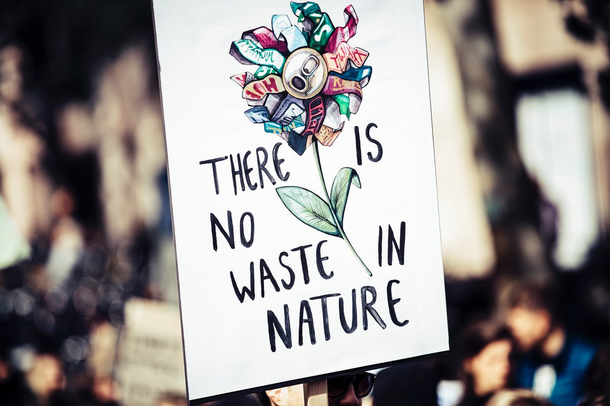

Projeto Cata-CO²
Bem-vindo ao trabalho de final de semestre da disciplina de Projeto Integrado, ministrada pelo Professor Renan Cavichi, do curso de Informática para Internet do Instituto Federal de São Paulo de Caraguatatuba, o IFSP-CAR.
O trabalho é apresentado pela aluna Letícia Raele Biancardi, prontuário CG3019811, utilizando HTML e CSS para a montagem de uma página na internet, a temática escolhida foi Meio Ambiente.
O tema foi delimitado para "captura de carbono", uma vertente da indústria ainda pouco conhecida pela maioria, mas que já se faz presente no mercado há muitos anos. Existem empresas que vendem sua tecnologia para outras empresas e países, há também aquelas que reutilizam o carbono capturado por seus próprios métodos e também aquelas que procuram retorná-lo à natureza de forma que não gere impactos negativos.
O Projeto Cata-CO² é meramente informativo e reune artigos e notícias de sites na internet, cuidando para que sejam de fontes confiáveis e seguras, mas não é representado ou tem intenção de divulgar nenhuma das empresas mencionadas (#paganóis).